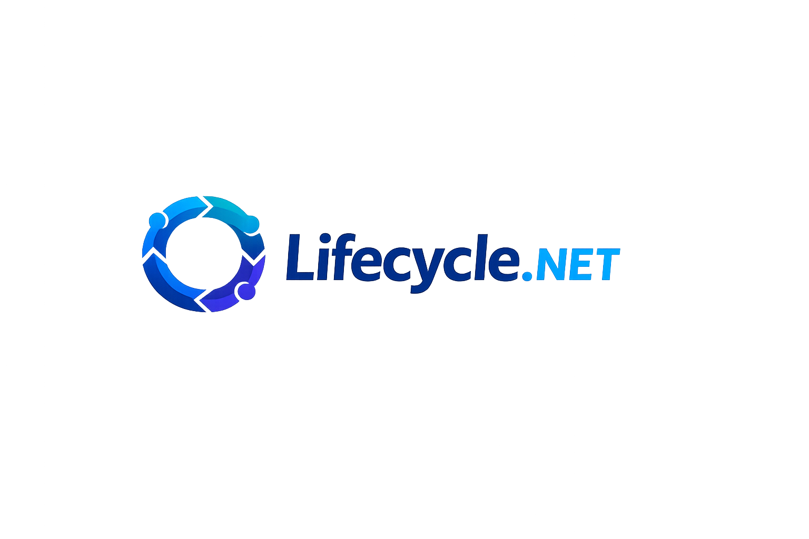

One lifecycle model for .NET.
Lifecycle.NET provides validated, async-first state transitions, middleware, diagnostics, dependency graphs, and Generic Host integration.
Quick start
var worker = new Worker();
await worker.InitializeAsync();
await worker.StartAsync();
await worker.StopAsync();Designed for real runtimes
Use it with background workers, services, plugins, desktop apps, and distributed components. Transition operations are serialized, cancellation-aware, and observable.